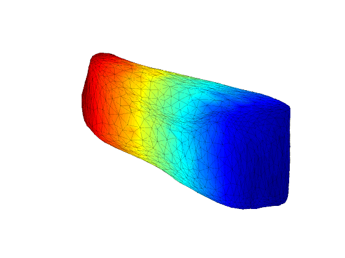
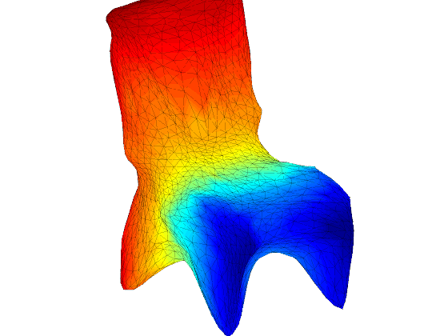

Object reconstruction from a single image - in the wild - is a problem where we can make progress and get meaningful results today. This is the main message of this paper, which introduces an automated pipeline with pixels as inputs and 3D surfaces of various rigid categories as outputs in images of realistic scenes. At the core of our approach are deformable 3D models that can be learned from 2D annotations available in existing object detection datasets, that can be driven by noisy automatic object segmentations and which we complement with a bottom-up module for recovering high-frequency shape details. We perform a comprehensive quantitative analysis and ablation study of our approach using the recently introduced PASCAL 3D+ dataset and show very encouraging automatic reconstructions on PASCAL VOC.
|
aeroplane |
bicycle |
boat |
|

bus |
car |

chair |
|
motorbike |
train |
tvmonitor |
This work was supported in part by NSF Award IIS-1212798 and ONR MURI-N00014-10-1-0933. Shubham Tulsiani was supported by the Berkeley fellowship and Joao Carreira was supported by the Portuguese Science Foundation, FCT, under grant SFRH/BPD/84194/2012. We gratefully acknowledge NVIDIA corporation for the donation of Tesla GPUs for this research.